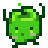

Junimos
| Junimo | |
 | |
| Information
| |
| Birthday | N/A |
| Lives In | Community Center |
| Address | Community Center |
| Marriage | No |
| Loved Gifts | N/A |
| “ | “We are the Junimos... Keepers of the forest.” |
Junimos are forest spirits that have taken up residence in the broken down Community Center.
The Player can complete Bundles for the Junimos by collecting and offering various items found in the Valley. When a bundle is completed, a Junimo will come and collect it, then stash it away in the hut in the main room of the Community Center. Completing a bundle will reward the player with an item. Completing all bundles in a room will reward the player with an improvement to the valley, and a star toward Community Center completion. After placing a star, a Junimo will follow the player around until the player leaves the Community Center. After all stars have been placed, the Community Center will be repaired, and the Junimos will return to the forest.
During the night after all bundles in a room of the Community Center are completed, the player will see a cutscene in which the Junimos make the indicated improvement to the town. Completing a bundle on the day a child is due for birth or adoption may prevent the cutscene from triggering.
If the player buys a JojaMart membership, the Community Center will be turned into a Joja Warehouse and the player will no longer see any Junimos unless they construct a Junimo Hut.
Junimo Hut

- Main article: Junimo Hut
Players can purchase a Junimo Hut from the Wizard after completing the Goblin Problem Quest. Once placed, Junimos will live in the hut on the player's farm. They'll automatically harvest any ripe crops within range of the hut and store them inside, where they can be gathered by the player at any time.
Junimo Alphabet
The Junimo alphabet consists of a simple substitution cipher. The font can be found in the game's data files, under Content\LooseSprites\font bold.xnb. The English translation is shown below.

Gallery

They call themselves the 'Junimos'

Junimo taking a bundle to the hut
Junimo following the player
Secrets
- The player can collect a decorative Junimo Plush by interacting with a bush north of the playground in Pelican Town on the 28th of any season at 12:00pm.
- On the title screen, clicking any of the leaves ten times will cause three Junimos to appear and wave.
- Secret Note #14 leads the player to find a Stone Junimo statue.
Trivia
- The Player can hit Junimos with a Slingshot or Master Slingshot, but they will not show a hate bubble. The ammo will hit the Junimo and a bursting animation will appear.
- When the player stands in front of a Junimo carrying a completed bundle to their hut in the community center, the Junimo will speed up like a villager would.
- Sam's 14 heart event mentions Sam making music for a TV show called the Happy Junimo Show, this indicates that Junimos may be fairytale creatures in the world of Stardew Valley, that are thought to not be real but are. Penny has an open book in her room that is titled "Fairys, Junimos and other Fables" which also adds to this idea.
- A Junimo appears as the main playable character in the in-game arcade game Junimo Kart.
- The Junimo Catalogue allows the player to obtain a wide range of Junimo-themed furniture items for use in decorating their house.
- According to the item's in-game description, Raisins are said to be the Junimos' favourite food.
- A Junimo appears as a pet in the video game Terraria, as part of a crossover with Stardew Valley.
| Villagers | |
|---|---|
| Bachelors | Alex • Elliott • Harvey • Sam • Sebastian • Shane |
| Bachelorettes | Abigail • Emily • Haley • Leah • Maru • Penny |
| Townspeople | Caroline • Clint • Demetrius • Evelyn • George • Gil • Gunther • Gus • Jas • Jodi • Kent • Lewis • Linus • Marlon • Marnie • Morris • Pam • Pierre • Robin • Vincent • Willy |
| Other | Birdie • Bouncer • Dwarf • Fizz • Governor • Grandpa • Henchman • Junimos • Krobus • Leo • Mr. Qi • Old Mariner • Professor Snail • Sandy • Wizard |